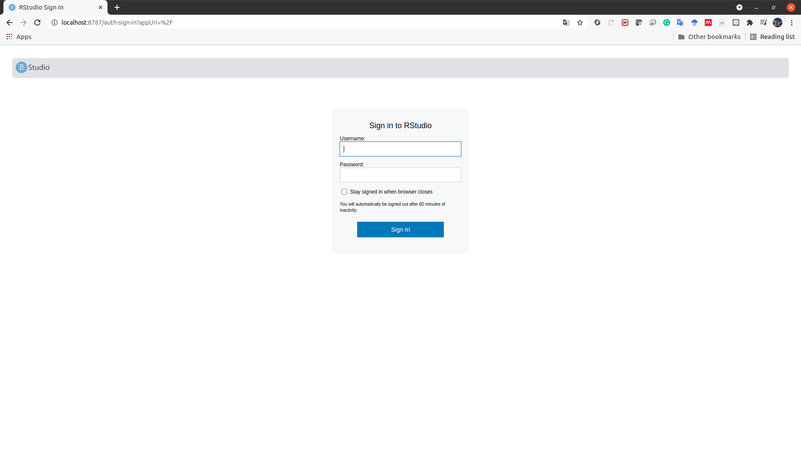
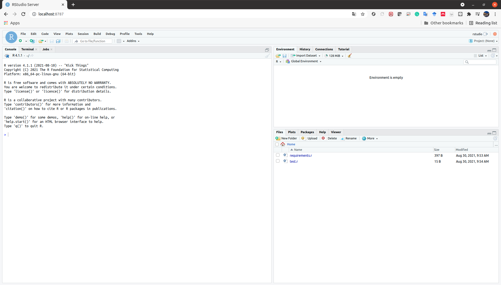

RStudio ServerをDockerで使うときのメモ
0. はじめに
RとRStudioもDocker containerとして使えれば少しめんどくさかったインストール工程 (Ubuntu20.04にRとRStudioをインストールする) をやらなくても良いのではないだろうか，と考えた．
調べたところ，RockerというものでRStudio ServerをDockerで使えるらしい1．
今回は備忘録として，Rockerを使ったときのメモを残すことにした．
1. 準備
最低限必要なことは，Docker Engineのインストールである．UbuntuへのDocker Engineのインストールは以前記事にした2．WindowsやMacについては他にも様々な記事があると思う．
2. 使い方
今回は，rocker/tidyverse を使う．おそらくrocker/verse なども同様の方法でできると思う．
まず，イメージファイルをローカルなマシンに落とす．これは，docker pull コマンドを用いればよい．
docker pull rocker/tidyverse
イメージファイルがあるかどうかは，次のコマンドで調べられる．
docker image ls | grep tidyverse
例えば，私のマシンで実行すると以下のように出力された．確かに rocker/tidyverse のイメージファイルがあることがわかる．
tcbn@tcbn-V530-15ICR:~$ docker image ls | grep tidyverse
rocker/tidyverse latest 63d48e0c8338 9 days ago 2.41GB
イメージファイルがある状態で，以下のように docker run コマンドを実行すればバックグラウンドでRStudio Serverが立ち上がる．
docker run --rm -d -p 8787:8787 -e PASSWORD=[yourpasswordhere] -v [mountdir]:/home/rstudio rocker/tidyverse
ここで，それぞれのオプションは以下のようなものである．
--rm: コンテナの終了後にコンテナを削除する．-d: 端末から切り離してバックグラウンドで実行する．-p: ポートマッピングを設定する．-p [port number (host)]:[port number (container)]-e: 環境変数を設定する．-v: ボリュームをマウントする．-v [host directory]:[container directory]
このコマンドの実行後，http://localhost:8787/ にアクセスすればユーザ名とパスワードの入力画面が出てくる．そこで，ユーザ名に rstudio を入力し，パスワードに -e で指定したパスワードを入力する．
実際に私のマシンでやってみる．~/r_sample というディレクトリをマウントする．
tcbn@tcbn-V530-15ICR:~/r_sample$ ls
requirements.r test.r
tcbn@tcbn-V530-15ICR:~/r_sample$ docker run --rm -d -p 8787:8787 -e PASSWORD=mypassword -v $(pwd):/home/rstudio rocker/tidyverse
83136d6a3c656386e74d14899e0ad55d4b10603ade1bad0dfe7dbde88e07e75c
この状態で，http://localhost:8787/ にアクセスすると，以下のようにユーザ名とパスワードの入力画面が出てくる．

ユーザ名に rstudio，パスワードに指定したパスワードを入力し，サインインすると，次のような画面になる．

先程見た~/rsample がマウントされていることがわかる．あとは必要なパッケージをインストールするなどしたら使えるようになる．
コンテナ内のRStudio Server側でrのソースコードを書き換えるとそれがマウントしたローカルなディレクトリにも反映される．
今起動しているDocker containerを docker ps コマンドで見ると，
tcbn@tcbn-V530-15ICR:~/r_sample$ docker ps
CONTAINER ID IMAGE COMMAND CREATED STATUS PORTS NAMES
83136d6a3c65 rocker/tidyverse "/init" 7 minutes ago Up 7 minutes 0.0.0.0:8787->8787/tcp, :::8787->8787/tcp inspiring_nash
となっている．コンテナを docker stop コマンドで終了した後に docker ps -a コマンドでコンテナ一覧を見る．
tcbn@tcbn-V530-15ICR:~/r_sample$ docker stop inspiring_nash
inspiring_nash
tcbn@tcbn-V530-15ICR:~/r_sample$ docker ps -a | grep tidyverse
--rm オプションで指定したとおり，終了後のコンテナが削除されている．
3. まとめ
今回は，RStudio ServerをDockerで使うときのやり方を簡単にまとめた．例えば，rocker/tidyverse をイメージファイルに指定してDockerfileを作り，使いやすい環境を作るといったこともできる．